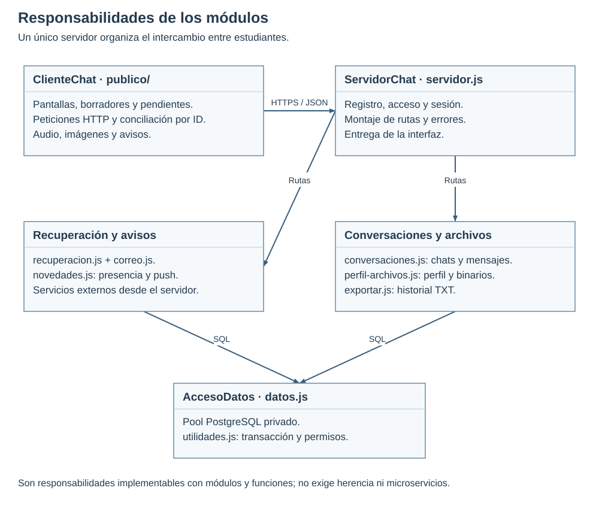

Paso 8 de 12 · Clases de diseño
Cómo se reparte el trabajo
Responsabilidades propuestas para las partes del sistema.
Módulos y responsabilidades
El diseño divide el trabajo necesario para intercomunicar a los estudiantes sin separar cada función en un servidor. Los nombres siguientes concretan la organización de módulos JavaScript y funciones, aunque la representación use responsabilidades de clases.
| Módulo previsto | Responsabilidad |
|---|---|
| publico/app.js y complementos | Acceso, navegación, estado de conversaciones, borradores, imágenes, audio e indicaciones. |
| servidor.js | Crear Express, servir la web, registrar cuentas, verificar credenciales y administrar sesiones. |
| conversaciones.js | Chats privados y grupos, miembros, roles, mensajes, lectura e historial. |
| perfil-archivos.js | Perfil, ajustes, nombres privados, cambio de contraseña y binarios autenticados. |
| recuperacion.js y correo.js | Desafíos de correo, solicitudes, decisión administrativa y transporte de correo. |
| novedades.js y publico/sw.js | Presencia, suscripción Web Push, entrega y apertura de avisos. |
| exportar.js | Exportación TXT con verificación de pertenencia. |
| datos.js y utilidades.js | Pool SQL, permisos reutilizables, transacciones y manejo de errores. |
Colaboración entre responsabilidades


Ampliar diagramaContrato de la API
Las rutas usan el prefijo /api. La tabla agrupa las operaciones del diseño; :id es una conversación, :mid un mensaje y :uid un usuario.
| Ruta u operación | Datos y resultado |
|---|---|
| POST /registro; POST, GET y DELETE /sesion | Crear cuenta, ingresar, comprobar acceso y salir. |
| GET /usuarios?q=… | Buscar por nombre o usuario con sesión. |
| GET y POST /conversaciones | Listar chats propios y abrir una pareja o crear grupo. |
| PATCH /conversaciones/:id | Modificar datos del grupo con rol de administrador o fijado y silenciado propios. |
| GET, POST /conversaciones/:id/miembros; PATCH, DELETE …/miembros/:uid | Consultar integrantes, añadirlos, cambiar roles o retirar una pertenencia según permisos. |
| GET y POST /conversaciones/:id/mensajes | Consultar con cursores o guardar el intento validado. |
| PATCH y DELETE …/mensajes/:mid; POST …/lectura | Editar o eliminar un mensaje propio y avanzar la lectura. |
| PATCH /perfil; PATCH /perfil/contrasena | Gestionar cuenta propia y revocar otras sesiones al cambiar la clave. |
| PUT /contactos/:id/nombre | Guardar o quitar un nombre privado para un contacto en la cuenta propia. |
| POST /archivos; GET /archivos/:id | Subir contenido binario o descargarlo tras la autorización. |
| GET /exportar/chats.txt | Exportar todos los chats propios o una selección autorizada. |
| POST /registro/correo/*, /correo/* y /recuperacion/* | Emitir y verificar códigos; solicitar y completar recuperación. |
| POST /presencia; GET /notificaciones/clave; POST, DELETE /notificaciones/suscripcion | Actualizar actividad y gestionar avisos por dispositivo. |
Errores y frontera entre capas
Una petición inválida produce un error comprensible sin guardar contenido parcial. La API diferencia datos inválidos (400), sesión ausente (401), permiso insuficiente (403), recurso no disponible (404), conflicto (409), vencimiento (410), límite de tamaño (413), exceso de solicitudes (429) e indisponibilidad del correo (503).
Ocultar un botón no es autorización. Los controles de sesión, autoría, propiedad de archivos y pertenencia deben repetirse en el servidor. Las consultas SQL usan parámetros; los detalles internos de un fallo no se entregan al navegador.
Documentos y modelos
Consultar la documentación completa en PDF. Esta página y el documento del paso describen el mismo diseño del sistema.